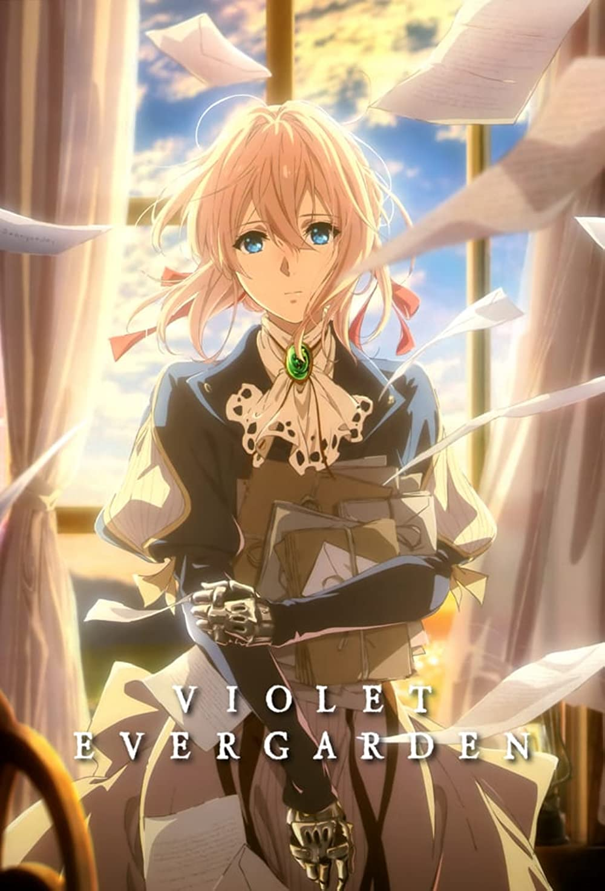

Grave of the Fireflies
Grave of the Fireflies
Movie (1 ep x 88 min)
With their father serving overseas in the Navy towards the end of the World War 2, Seita and his younger sister Setsuko are living as normally as they can. One day during a firebomb raid on the city their mother suffers fatal wounds and the two siblings' lives are turned upside down as they go to live with a relative. After suffering the cruel treatment of their aunt, who makes it clear that their very presence is a nuisance, Seita and Setsuko decide to leave and go to live in an abandoned bomb shelter. With no one else to rely on, Seita and Setsuko try their hardest to live from day to day. Though when food becomes ever more scarce and no one is willing to sell what little provisions they have, life for the pair is increasingly difficult. Then when Setsuko falls ill, Seita begins to realize just how fragile life is...
Source: Anime-Planet

Violet Evergarden
TV (13 eps)
As a child, Violet was used by the military as a weapon because of her combat prowess. Her one friend and protector was Major Gilbert, who named the girl, taught her how to speak and write, and cared for her. But after being seriously injured in the war, losing both arms in the process, Violet is brought to the Evergarden household to recuperate. There, she trains to become an Auto Memories Doll: a person who writes letters for others, deciphering their true feelings and expressing it on paper. As Violet travels the world, she helps her clients find love and comfort through the letters she writes; but more importantly, she slowly begins to understand emotions, so that she can finally cope with what she’s done, and what she’s lost.
Source: Anime-Planet
Ride Your Wave
Movie (1 ep x 95 min)
Hinako is a surf-loving college student who has just moved to a small seaside town. When a sudden fire breaks out at her apartment building, she is rescued by Minato, a handsome firefighter, and the two soon fall in love. Just as they become inseparable, a tragedy happens. Hinako is so distraught that she can no longer even look at the ocean, but one day she sings a song that reminds her of their time together, and Minato appears in the water. From then on, she can summon him in any watery surface as soon as she sings their song, but can the two really remain together forever? And what is the real reason for Minato's sudden reappearance?
Source: GKids
 Maquia: When the Promised Flower Blooms
Maquia: When the Promised Flower Blooms
Movie (1 ep x 115 min)
A gentle, enchanted race of weavers, the Iolph pass the many centuries of their lives crafting their traditional fabrics in their idyllic, isolated village. Among this perpetually youthful tribe is Maquia, beloved by all but touched by loss and loneliness. The peace is shattered when soldiers arrive astride dragons, dispatched by the King of Mesate to wrest away the spoils and secrets of the Iolph. Maquia succeeds in escaping, only to find herself cast into the unknown wilderness. When she discovers an orphaned baby boy, as lost and forlorn as she, Maquia feels compelled to care for him as they seek their way in the world of humans – a world in growing turmoil. The bond between Maquia and her ward Erial, however, is one woven with threads of tragedy.
Source: Fantasia Festival
 Your lie in April
Your lie in April
TV (22 eps)
Kousei Arima was a genius pianist until his mother's sudden death took away his ability to play. Each day was dull for Kousei. But, then he meets a violinist named Kaori Miyazono who has an eccentric playing style. His monotonus life was about to change forever.
Source: Crunchyroll
 A Silent Voice
A Silent Voice
Movie (1 ep x 130 min)
After transferring into a new school, a deaf girl, Shouko Nishimiya, is bullied by the popular Shouya Ishida. As Shouya continues to bully Shouko, the class turns its back on him. Shouko transfers and Shouya grows up as an outcast. Alone and depressed, the regretful Shouya finds Shouko to make amends.
Source: Eleven Arts